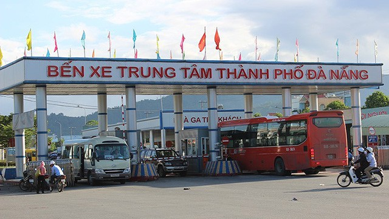

Bến Xe Khách Đà Nẵng
Nhà xe Van Hau - Ngoc Tinh
Tại bến xe trung tâm Đà Nẵng có khá đa dạng các loại xe được phục vụ. Từ các xe bus di chuyển nội thành đến các xe khách giường nằm và ghế ngồi đi tới các tỉnh lân cận hoặc xa hơn. Nhìn chung đáp ứng được nhu cầu khá đa dạng của các hành khách. Lộ trình xe bus 01: Bến xe Trung tâm Đà Nẵng – Tôn Đức Thắng – Điện Biên Phủ – Hà Huy Tập – Hà Khê – Nguyễn Tất Thành – Ông Ích Khiêm – Lê Duẩn – Chi Lăng – Hùng Vương –Trần Phú – Trưng Nữ Vương – Núi Thành – Duy Tân – Cầu Trần Thị Lý – Ngũ Hành Sơn – Lê Văn Hiến – Trần Đại Nghĩa – Bến xe Hội An. Lộ trình xe bus 03: Bến xe Trung tâm Đà Nẵng – Tôn Đức Thắng – Điện Biên Phủ – Nguyễn Đức Trung – Trần Cao Vân – Hà Khê – Nguyễn Tất Thành – Ông Ích Khiêm – Lê Duẩn – Ngô Gia Tự – Hùng Vương – Ông Ích Khiêm – Hoàng Diệu – Trưng Nữ Vương – Núi Thành – Đường 2/9 – Cách Mạng tháng 8 – Hòa Cầm – Hòa Khương – Bến xe Đại Lộc (TT Ái Nghĩa).
Xe khách:
Ở bến xe có khá nhiều nhà xe lớn và nổi tiếng mà bạn có thể lựa chọn. Vì các xe cung cấp dịch vụ cho các khách hàng ở nhiều phân khúc khác nhau. Nên bạn có thể lựa chọn nhà xe phù hợp nhất với nhu cầu và ví tiền của mình nhé.
Xe khách Phương Trang: đi Hà Nội, Quảng Bình, Ninh Bình, Thanh Hóa, Nghệ An, Huế, Lâm Đồng.
Xe khách Mai Linh Express: đi TP Hồ Chí Minh, Quảng Ngãi, Bình Định, Đắk Lắk.
Xe khách Cúc Tùng: đi TP Hồ Chí Minh, Khánh Hòa
Xe khách Thuận Tiến: đi Gia Lai
Xe khách Ngọc Ánh: đi Hải Phòng
Một số xe đi Hà Nội uy tín như: Danatranco, Thanh Sơn, Tùng Vy, Hoàng Long, Đại Phát, Hoàng Vân, Thanh Sơn, Vân Khôi,…
Có thể nói đây là bến xe chất lượng nhất Đà Nẵng. Mặc dù ở đây số lượng người đi lại khá đông, nhưng tình hình an ninh trật tự khá được đảm bảo.
So với các chuyến xe đi các tỉnh phía Bắc thì các chuyến đi các tỉnh phía Nam tại bến xe Đà Nẵng có vẻ trội hơn. Ở đây có khoảng hơn chục đầu xe di chuyển mỗi ngày. Bởi lẽ, đây chính là lợi thế sân nhà của các xe đến các tỉnh miền Trung nên số lượng xe không những nhiều mà thời gian xuất bến cũng liên tục từ 15 – 20 phút lại có một chuyến.
Đối với các tỉnh miền Nam và Tây Nguyên thì số lượng các đơn vị liên kết tại bến xe Đà Nẵng khá nhiều. Mỗi năm có hàng triệu lượt du khách bao gồm cả sinh viên, khách du lịch, người công tác xa quê đến sử dụng dịch vụ. Bến xe Đà Nẵng cam kết sẽ cung cấp, tăng cường thêm các chuyến xe phục vụ hành khách vào các thời kỳ cao điểm của năm.
Phần lớn, các nhà xe ở đây không chỉ phục vụ vận tải khách hàng mà còn có dịch vụ vận tải hàng hóa đa dạng đối với chuyến đi dài. Nếu có nhu cầu gửi đồ khách hàng có thể liên hệ trực tiếp với nhà xe hoặc liên hệ với quầy vé bên trong bến xe để được tư vấn kỹ hơn. Vì đoạn đường xa nên gần như các nhà xe đều chọn chạy dọc theo đường quốc lộ để tiết kiệm thời gian di chuyển, giúp khách hàng yên tâm nghỉ ngơi và có thể nhận được hàng gửi sớm nhất.